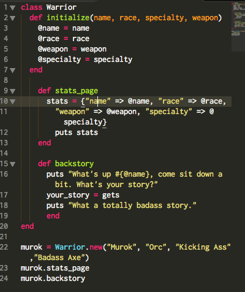

Matthew D. Huff AKA Not Really Classy
September 28, 2014
Helllooooooooo what's up. I'm here today to talk about CLASSES! So, for today's class (you see what I did there?), I made a little somethin-somethin. I made what's called a CLASS. I'm gonna go into some basic stuff about classes, then I'll show you what I made. It's totally badass.
A class, is a means of making a sort of object in Ruby. It's very convenient for grouping together related methods and variables that you'll need for a specific program. Now, I'm gonna show you what I made and go through it. I think I was supposed to model a real-world object. But I didn't. I'm a big nerd and I made a game object because that's what I like.
You know what? Screw it. I'll call this a real world object. I'm creating a fake...person(?) in this class.
So now let's go through this quickly.
You see that first line? Line 1? That's where I initialized the class and gave it a name. You do that every time you make a class, and give it a name related to whatever it is you're trying to do with it!
Next, we've been taught to create an initial method called initialize which will take in the outside inputs we need, and turn them into a special type of variable. The Instance Variable! You can tell a variable is an instance variable, because it will always have a @ as the very first character of it's name!
Instance Variables are special, and very useful to classes, because they work throughout the entire class!
You see how I call @name in multiple methods throughout the entire class? That's because it's an instance variable. It's not quite GLOBAL (as in everywhere) because I can't use it outside of the class, but it's still very versatile in scope. Scope being...hm, the TERRITORY of a variable. The area that variable can affect and move around in. The Scope of an Instance Variable is the Class it was initialized in.
Now I'm gonna go ahead and finish up, because I don't want to confuse you, and I'm just hitting you with some basic knowledge so you can egt out there and make your own, totally badass classes.
Well, before I move on, there's one thing I want you to notice. You see line 20? That end? Always remember to end your classes. Just do it. Sometimes I get lost in countless "ends" and can't even be sure whether I've actually ended my class, so always make sure you do that FIRST, and then build inside of that!
Ok, back on topic! After the class has ended, you see what I did to create an INSTANCE of the class? InstanceName = ClassName.new(arguments). That's all it takes! Once you do that, just do InstanceName.methodname (in this case InstanceName = murok if you're not clear.) As long as you remember to create an instance of your new class OUTSIDE of the class, you can then call up all the fancy methods you made inside of it!
That's about all I feel the need to explain right now, because frankly i'm still learning myself! I'm more of a hands on type of dude, go open a .rb file, and make your own class using what I just taught you! DO IT. DO IT DO IT DO IT. I DOUBLE DOG DARE YOU TO DO IT.
Ok, that's all. I'm done.
Till next time!
Matthew D. Huff